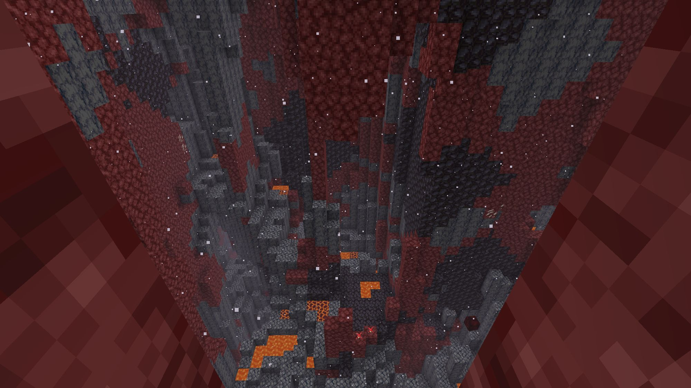
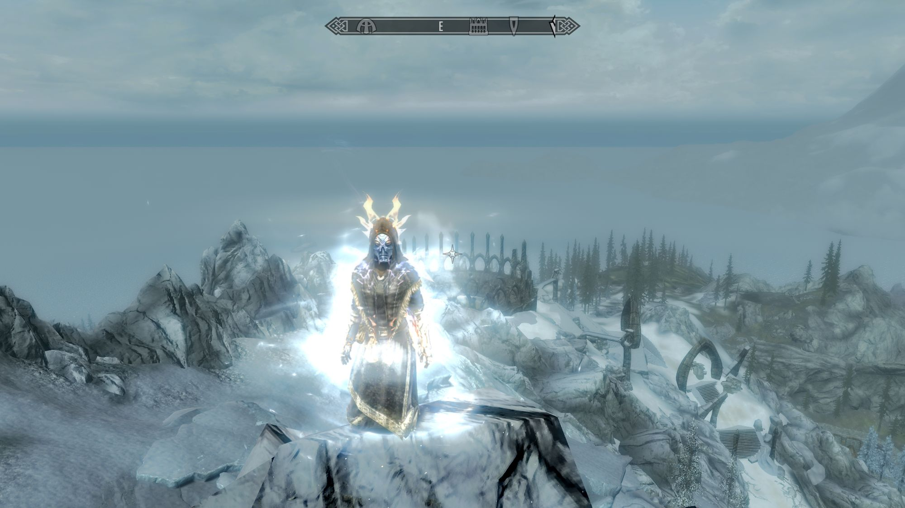
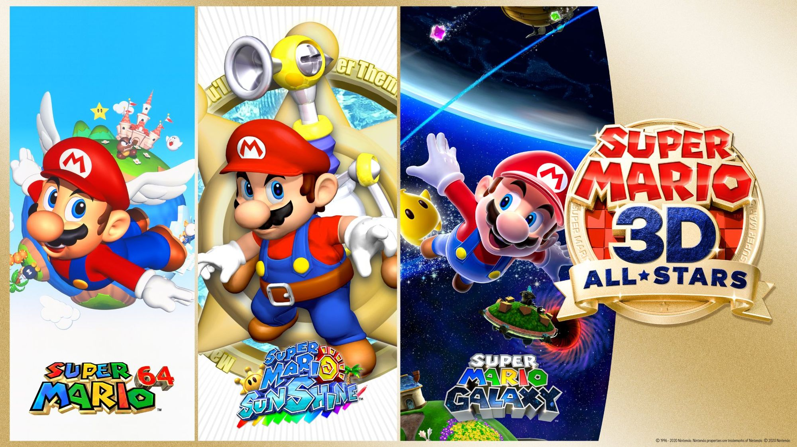
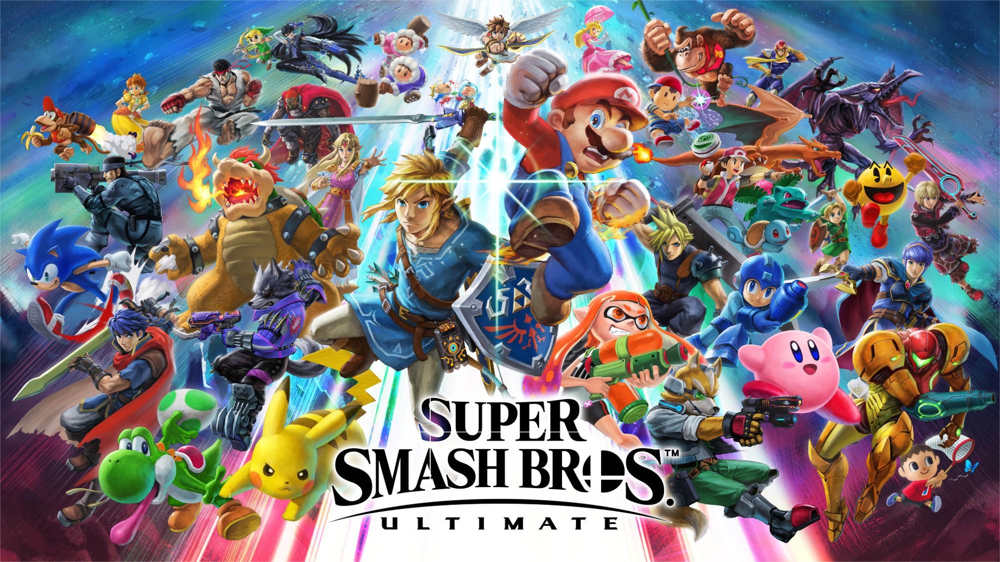
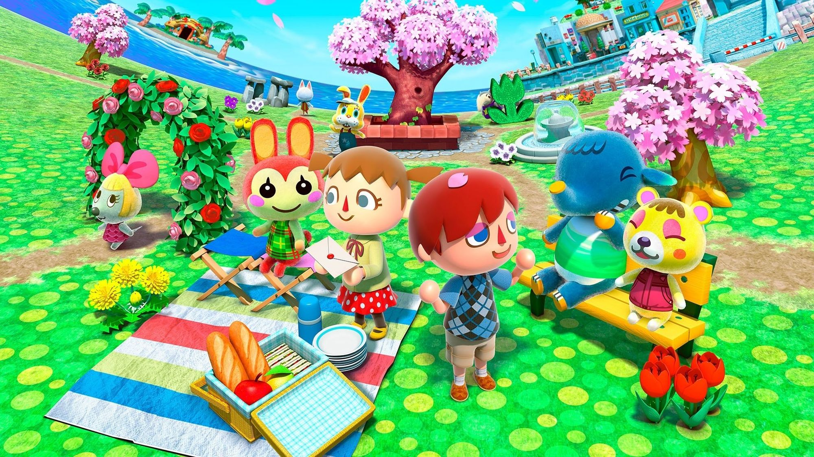
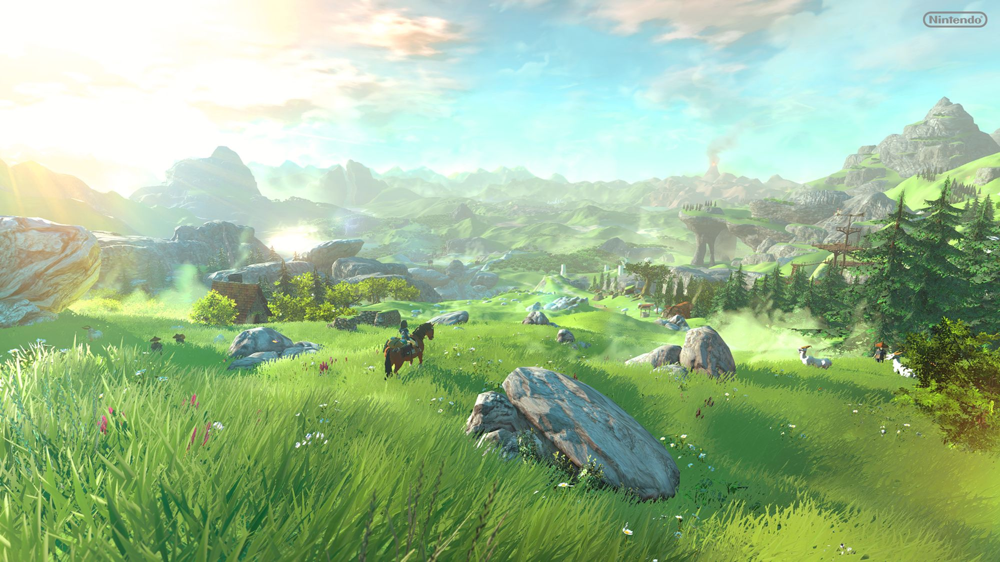
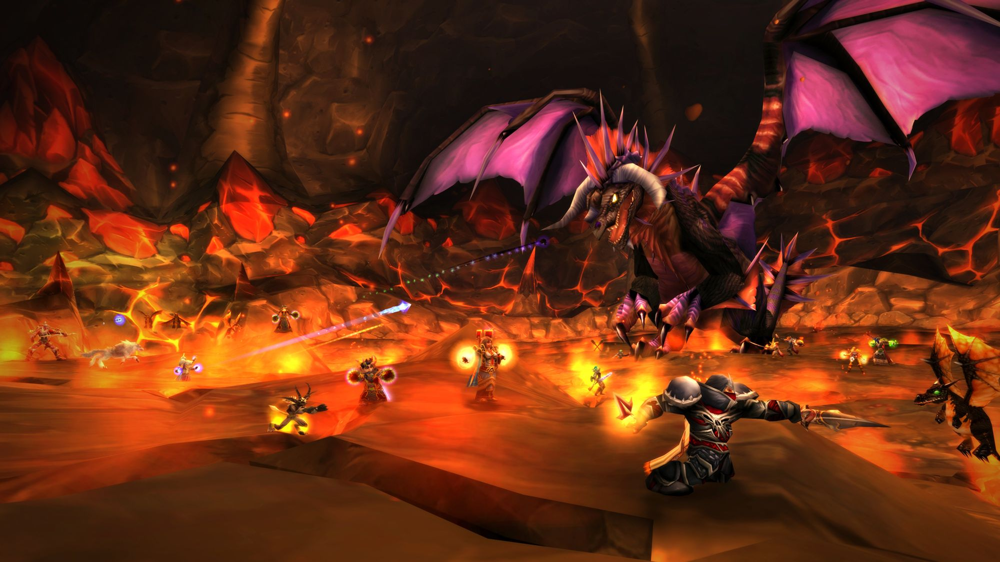
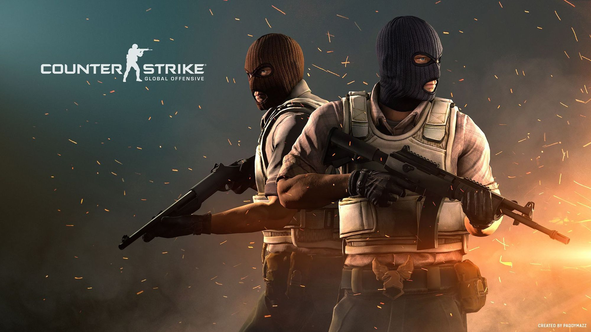

My tastes
Video games
I'm a huge video games player, I've been playing since I was 6 years old. My favourite games are
League
of Legends, Minecraft, The Elder Scrolls V : Skyrim, MMORPGs and most of Nintendo franchises.
League of Legends
League of Legends is one of the first online game I've played with Minecraft. It always and
still
has
a special place in my heart. I've spent thousands of hours playing to it, and I feel like
all
big
video games franchises bring a whole universe into their games. Despite its questionnable
behaviour
community
and
toxic ambience, I'd say it's more than a game, it's a story, that can be perceived for
players as an involvment into a community where rank becomes a social construct. In
addition, its fame and large diffusion thanks to competitions, streaming and ads makes
League of Legends a global movement. I'm really happy about the
announcement of the MMORPG based on LoL's universe and feel truly hyped to play it.
Minecraft
Minecraft is actually the first online game I've ever played as far as I remember. I've spend
a
lot
of hours playing to it with my middle school friends too. In my opinion, Minecraft is THE
game.
Its ambience, music,
concept which is relatively simple (a cubic world) makes it perfect and easily
understandable
for
everyone.
If humanity had to explain what a video game is, they probably should pick Minecraft. Even
nowadays, I play it sometimes on my Discord guild's
dedicated Minecraft
server ! I also
think
that the command blocks are a part of the reason of why I showed interest into
programming
later
on.


The Elder Scrolls V: Skyrim
Skyrim is the only opus of The Elder Scrolls I've been playing to. Its massive content and
universe
made me simply love it. The action takes place in a fantasy medieval era, which corresponds
to
my
favourite kind of historical period. This is the example, in my mind, that some video games
are
better to play solo than online, especially when designers put a lot of work in the game
lore
and
environment.
Other games
There are so many games that I've been playing but the objective is not to explain for all of
them
why did I particularly enjoyed them. I'll just give some more examples so you have a wider
spectrum
of my tastes:

Black Desert Online

Super Mario 3D All-stars

Super Smash Bros. Ultimate

Animal Crossing : New Horizons

The Legend of Zelda : Breath of the Wild

World of Warcraft Classic

Counter-Strike : Global Offensive
Arts
Just a quick note about art: I'm not an artist myself. I do not wish to put effort in discovering any
art
for an enough long period of time for it to be interesting. It may change a day or another but
what I
want to share here is my taste in genres of art I truly appreciate for their aesthetic. I don't even
have an huge artistic culture, I've just discovered things that I like and I think that's enough to
spread content.
Music
Don't get me wrong, music is the art I enjoy the most. For me, the combination of both lyrics and
instrumental opens the door to a universe of universes. Each artist or group of artists can create their
own art and spread emotions all over the world to people who will be either moved by the text or
pleased by the instrumental or even both. For me, this is the main reason why this art is interesting,
it shows how
themes can be revisited or created from scratch. It is one of the greatest humanity's shard of culture.
About me : I do
listen to a lot of music, and try to listen to a lot of different genres of it. My favourite style
is rap for sure, French or international though. I love to spread my discovers to my friends and
get their feedback about it to know if they enjoyed it as I did or not. Here is a quick list of artists
or bands that I like to listen to :
- Vald (French rap)
- Lil Peep (Rap)
- XXXTentacion (Rap)
- Columbine (French rap)
- Damso (French rap)
- $uicideboy$ (Rap)
- Youv Dee (French rap)
- convolk (Rap)
- DjEphixa (Dubstep)
- TENDER (Electro)
- Bring me the horizon (Alternative metal)
- scale$ (Rap)
- A group of artists with the same vibes but all of them are awesome in their own way:
- 1nonly
- lilbubblegum
- loat!
- HAARPER
- CORPSE
I'm forgetting a lot of others artists or bands but you'll find a link here to the
weekly Spotify playlist made for my Discord's server where people can share their favourite music. You
can try to guess my contributions to it! Finally, I invite you to check the Trash
gang YouTube channel (their AMVs are amazing) where I did found a lot of wonderful underground
artists and that deserve way more fame in my opinion.
Literature
When I was younger, I did 4 years of theater so I was in contact with the culture of plays from famous
and less known authors. I use to
read a lot of fantasy books such as Cats of the Clan, Narnia and His Dark Materials. I tried other
styles like Harlan Coben's books or the CHERUB saga for the thrilling. Not only reading novels, I was
also reading a lot
of comics. Although, I read a lot a few years ago, I do not read as much at the moment, because
I don't find the time of it and prefer to spend it into others activities (even if I'd like to discover
philosophical and religious books). During my high school formation, I had no choice but
to read traditional books from French authors and I find myself surprised in enjoying a lot of
them, especially poetry. As far as I'm concerned, my favourite is Flowers of Evil from Charles
Baudelaire since I had the
opportunity to analyze it in class and personally at home saw the parallel with Columbine's song "Les
prélis" which main
theme refers a lot to Baudelaire's original work.
Painting
Anime
Neon Genesis Evangelion, Shingeki No Kyojin, Devilman Crybaby, Erased, Kuroko no basket